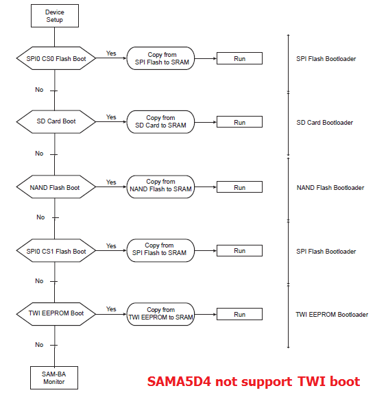
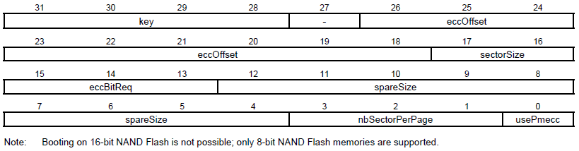

AT91Bootstrap
Introduction
AT91Bootstrap is the 2nd level bootloader for Atmel AT91 SoC providing a set of algorithms to manage the hardware initialization such as clock speed configuration, PIO settings, DRAM initialization, to download your main application from specified boot media (NAND FLASH, serial FLASH (both AT25-compatible of DataFlash), serial EEPROM, SD Card, etc.) to main memory and to start it.Boot strategies
AT91 chips embed a boot ROM code. It is enabled depending on BMS (Boot Mode Select) pin state on reset. The ROM code scans the contents of different media like serial FLASH, NAND FLASH, SD/MMC Card and serial EEPROM. If a valid application is available then it downloads this application into the chip internal SRAM and runs it. To determine if a valid application is present the ROM code checks the eight ARM exception vectors.If no valid application is available then SAM-BA Monitor is executed. It waits for transactions either on the USB device, or on the DBGU serial port, then the SAM-BA tool can be used to program FLASH or EEPROM present on your board.
For more information on this topic, please check the corresponding SAM product datasheet section Boot Strategies.
ROM Code boot Sequence example
This is an example of boot sequence when BMS=1 taken from thesama5 product family:

By programming BSC_CR register, we can bypass some steps in above sequence.Build AT91Bootstrap from sources
Setup ARM Cross Compiler
- Ubuntu:
In Ubuntu, you can install the ARM Cross Compiler by doing:sudo apt-get install gcc-arm-linux-gnueabi export CROSS_COMPILE=arm-linux-gnueabi-
- Others:
For others, you can download the Linaro cross compiler and setup the environment by doing:wget -c https://releases.linaro.org/components/toolchain/binaries/7.3-2018.05/arm-linux-gnueabi/gcc-linaro-7.3.1-2018.05-x86_64_arm-linux-gnueabi.tar.xz tar xf gcc-linaro-7.3.1-2018.05-x86_64_arm-linux-gnueabi.tar.xz export CROSS_COMPILE=`pwd`/gcc-linaro-7.3.1-2018.05-x86_64_arm-linux-gnueabi/bin/arm-linux-gnueabi-
Other dependencies
Version 3.9.2 is equivalent with version 3.9.3 but continues to use Python2.
Yocto Project version 3.1 (Dunfell) and later , have obsoleted Python2, thus must use Python3. That is why Yocto Dunfell and later use 3.9.3 or later versions with Python3.
Future versions of AT91Bootstrap will most likely be Python3 only.
Build AT91Bootstrap
This section describes how to get source code from the git repository, how to configure with the default configuration, how to customize AT91Bootstrap based on the default configuration and finally to build AT91Bootstrap to produce the binary. take the default configuration to download U-Boot from NandFlash for example.Get AT91Bootstrap Source Code
You can easily download AT91Bootstrap source code on the at91bootstrapTo get the source code, you should clone the repository by doing:
$ git clone git://github.com/linux4sam/at91bootstrap.git Cloning into 'at91bootstrap'... remote: Enumerating objects: 51, done. remote: Counting objects: 100% (51/51), done. remote: Compressing objects: 100% (32/32), done. remote: Total 10880 (delta 20), reused 39 (delta 19), pack-reused 10829 Receiving objects: 100% (10880/10880), 4.03 MiB | 395.00 KiB/s, done. Resolving deltas: 100% (8300/8300), done. $ cd at91bootstrap/
Configure AT91Bootstrap
Assuming you are at the AT91Bootstrap root directory, you will find aboard/sam9x60ek folder which contains several default configuration files: sam9x60ekqspi_uboot_defconfig sam9x60eksd_uboot_defconfig sam9x60eknf_uboot_defconfig
qspi means to read quad-SPI serial flash, sd means to read mmc card, nf means to read nand flashYou can configure AT91Bootstrap to load U-Boot binary from SD Card by doing:
$ make mrproper $ make sam9x60eksd_uboot_defconfigIf the configuring process is successful, the .config file can be found at AT91Bootstrap root directory.
Customize AT91Bootstrap
If the default configuration doesn't meet your need, after configuring with the default configuration, you can customize it by doing:$ make menuconfigNow, in the menuconfig dialog, you can easily add or remove some features to/from AT91Bootstrap as the same way as kernel configuration.
Move to
<Exit> with arrows and press this button hitting the Enter key to exit from this screen.
Build AT91Bootstrap
Then you can build the AT91Bootstrap binary by doing:$ makeIf the building process is successful, the final .bin image is binaries/at91bootstrap.bin.
Program AT91Bootstrap binary into nandflash
Using SAM-BA to flash AT91Bootstrap to board
Launch SAM-BA tools
- According to this section (take sama5d3xek as example) make sure that the chip can execute the SAM-BA Monitor.
Configure NAND ECC config
Programming AT91Bootstrap
- Choose Send Boot File action, then press Execute button to select the at91bootstrap binary file and to program the binary to the NandFlash
Using U-Boot to flash AT91Bootstrap
Setup PMECC header for different type of board
When ROM code load AT91Bootstrap in nandflash, at first ROM code will check the header to know what kind of ecc that binary is stored in nand. So the header is made of 52 times the same 32-bit word, total in 0xd0 bytes, each 32-bit word in made in following format:
For different EK boards, the pmecc header is listed in following:# at91sam9x5ek & at91sam9n12ek # 2 bit pmecc in 512 byte sector, one page has 4 sectors, spare size: 64, ecc offset: 48 setenv pmecc_header 0xc0c00405 # sama5d3xek & sama5d3_xplained # 4 bit pmecc in 512 byte sector, one page has 4 sectors, spare size: 64, ecc offset: 36 setenv pmecc_header 0xc0902405 # sama5d4ek & sama5d4 xplained # 8 bit pmecc in 512 byte sector, one page has 8 sectors, spare size: 224, ecc offset: 120 setenv pmecc_header 0xc1e04e07
Load AT91Bootstrap binary and setup the 6th vector (offset is 0x14) as the file size
- Following is U-Boot commands that can flash at91bootstrap to nand flash
setenv load_addr 22000000 # load_addr started by pmecc header setenv load_addr_bootstrap 220000d0 # load_addr + 0xd0 setenv load_addr_bootstrap_vector 220000e4 # load_addr + 0xd0 + 0x14 setenv erase_bootstrap 'nand erase 0 10000' # erase first 64k nand. setenv mmc_bootstrap_file 'boot.bin' # at91bootstrap file name in mmc card setenv load_mmc_bootstrap 'mw.b ${load_addr} 0xff 0x10000; mw.l ${load_addr} ${pmecc_header} 0x34; fatload mmc 0 ${load_addr_bootstrap} ${mmc_bootstrap_file};' setenv flash_bootstrap_from_mmc 'run erase_bootstrap; run load_mmc_bootstrap; mw.l ${load_addr_bootstrap_vector} ${filesize}; nand write ${load_addr} 0 0x10000;' setenv tftp_bootstrap_file 'u-boot/boot.bin' # at91bootstrap file name in tftp server folder setenv load_tftp_bootstrap 'mw.b ${load_addr} 0xff 0x10000; mw.l ${load_addr} ${pmecc_header} 0x34;tftp ${load_addr_bootstrap} ${tftp_bootstrap_file};' setenv flash_bootstrap_from_tftp 'run erase_bootstrap; run load_tftp_bootstrap; mw.l ${load_addr_bootstrap_vector} ${filesize}; nand write ${load_addr} 0 0x10000;'
- Now we can run following commands to programming at91bootstrap to nandflash in U-Boot:
run flash_bootstrap_from_tftporrun flash_bootstrap_from_mmc
Contributing to AT91Bootstrap
If the system board that you have is not listed, then you will need to port AT91Bootstrap to your hardware platform. To do this, follow these steps:- Create a new directory to hold your board specific code under contrib/board/ directory. Add any files you need. In your board directory, you will need at least the "board.mk", a ".c", ".h", "Config.in.board", and "Config.in.boardname".
- Create the necessary default configuration files such as "df_uboot_defconfig" in your new board directory.
- Add(source) your board's "Config.in.board" in "contrib/board/Config.in.board" file.
- Add(source) your board's "Config.in.boardname" in the "contrib/board/Config.in.boardname" file.
- Add your board's ".h" in the "contrib/include/contrib_board.h" file.
- Run "make df_uboot_defconfig" with your new name.
- Type "make", and you should get the final .bin image can be found under the binaries/ directory.
Known Issues
About the latest version, some issues are found not fixed, please see the document KNOWN ISSUESRecent FAQ
- AT91Bootstrap
-
• SDCard Boot Notice: How to boot up the board from SD card. (Sama5d2-icp, Sam9x60EK, Sama5d27WLSom1EK, Sama5d27Som1EK, Sama5d2PtcEK, Sama5d2Xplained, Sama5d4Xplained, Sama5d4ek, Sama5d3Xplained, Sama5d3xek, AT91sam9x5-ek)
• SOM 1 EKe MMCSupport: . (Sama5d27Som1EK)
• Audio Clocks On SAM 9 X 60: How to configure PLLA in AT91bootstrap to generate clocks for SAM9X60. (Sam9x60EK)
• AT 91 Bootstrap Debug Eclipse: Debug AT91Bootstrap. (Sama5d4Xplained, Sama5d4ek, Sama5d3Xplained, Sama5d3xek)


| I | Attachment | Action | Size | Date | Who | Comment |
|---|---|---|---|---|---|---|
| |
nvm_boot_sequence.png | manage | 39.8 K | 2015-05-19 - 03:31 | JoshWu | |
| |
pmecc_header_format.png | manage | 15.4 K | 2015-05-19 - 03:32 | JoshWu |
r79 - 29 May 2020 - 12:04:52 - EugenHristev

{kind=link}
{kind=link}
{kind=link}
{kind=link}
Copyright © by the contributing authors. All material on this collaboration platform is the property of the contributing authors.
Linux® is the registered trademark of Linus Torvalds in the U.S. and other countries.
Microchip® and others, are registered trademarks or trademarks of Microchip Technology Inc. and its subsidiaries. 
Arm® and others are registered trademarks or trademarks of Arm Limited (or its affiliates). Other terms and product names may be trademarks of others.
Ideas, requests, contributions ? Connect to LinksToCommunities page.